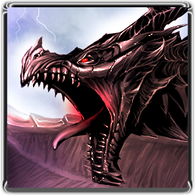

Alduin

And the Scrolls have foretold,
of black wings in the cold,
That when brothers wage war come unfurled!
Alduin, Bane of Kings, ancient shadow unbound,
With a hunger to swallow the world!
- Race: Dragon
- Title: Dovahzul, the World Eater
- Location: Skuldafn
First of his kind, son of Akatosh, he is considered the « wellspring » of the Nordic pantheon, as well as the harbinger of the apocalypse, believed to have a greater role in reshaping the world entirely.